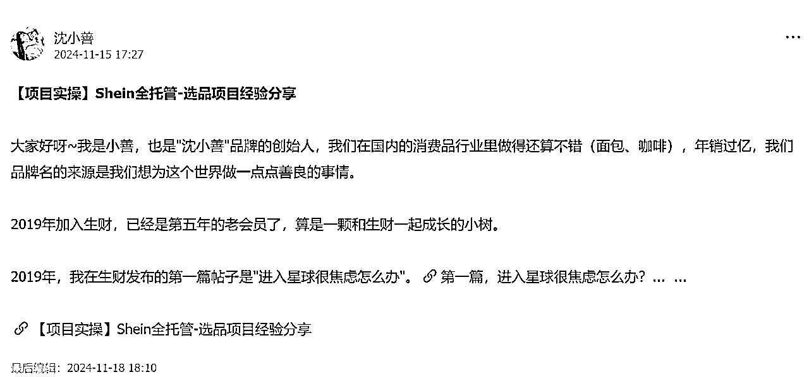
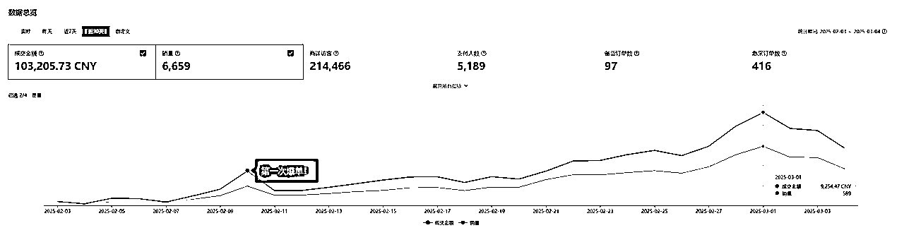
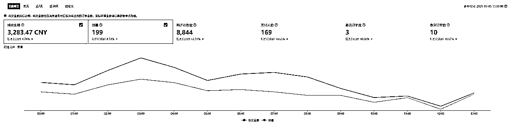
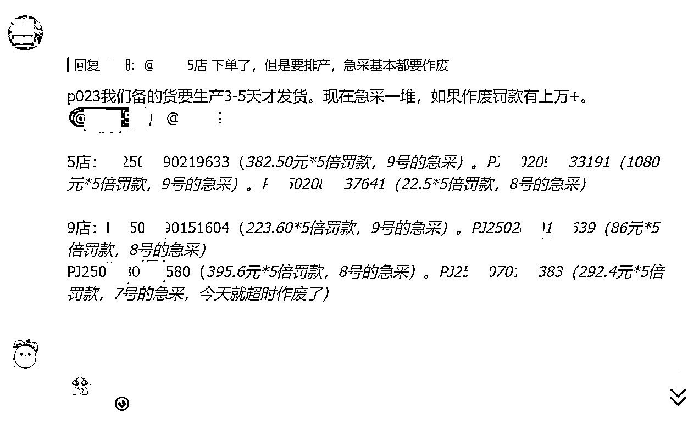
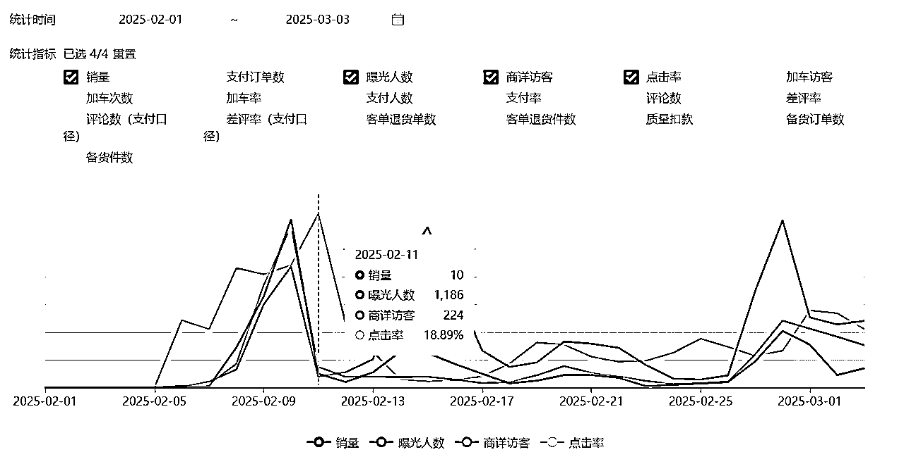
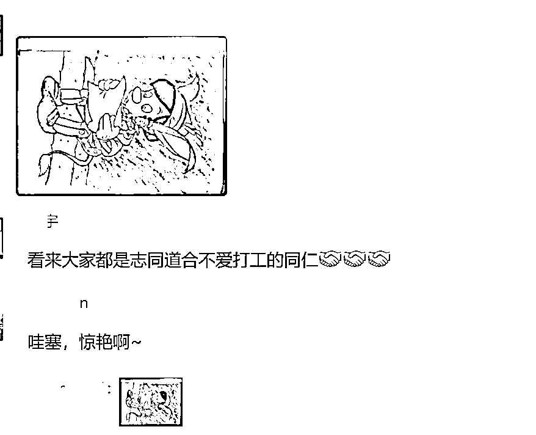
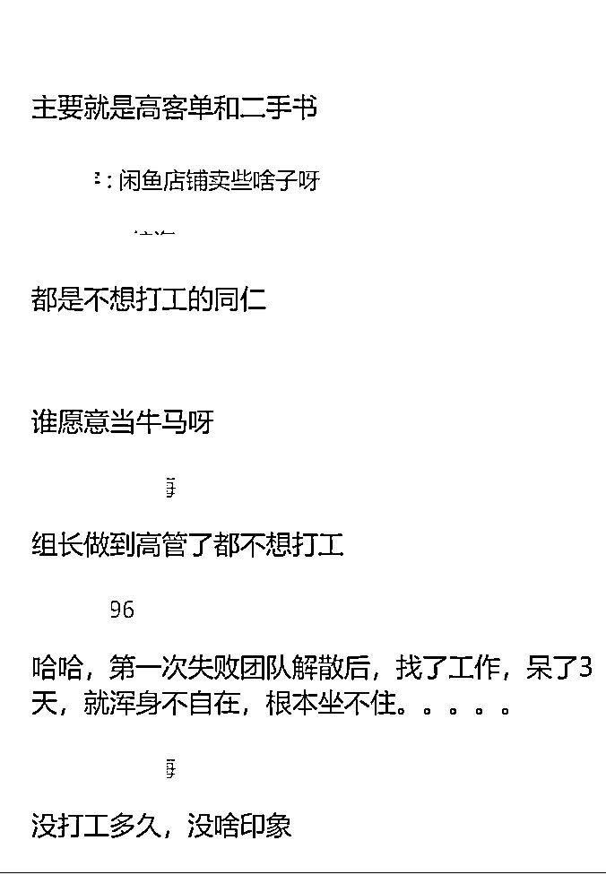
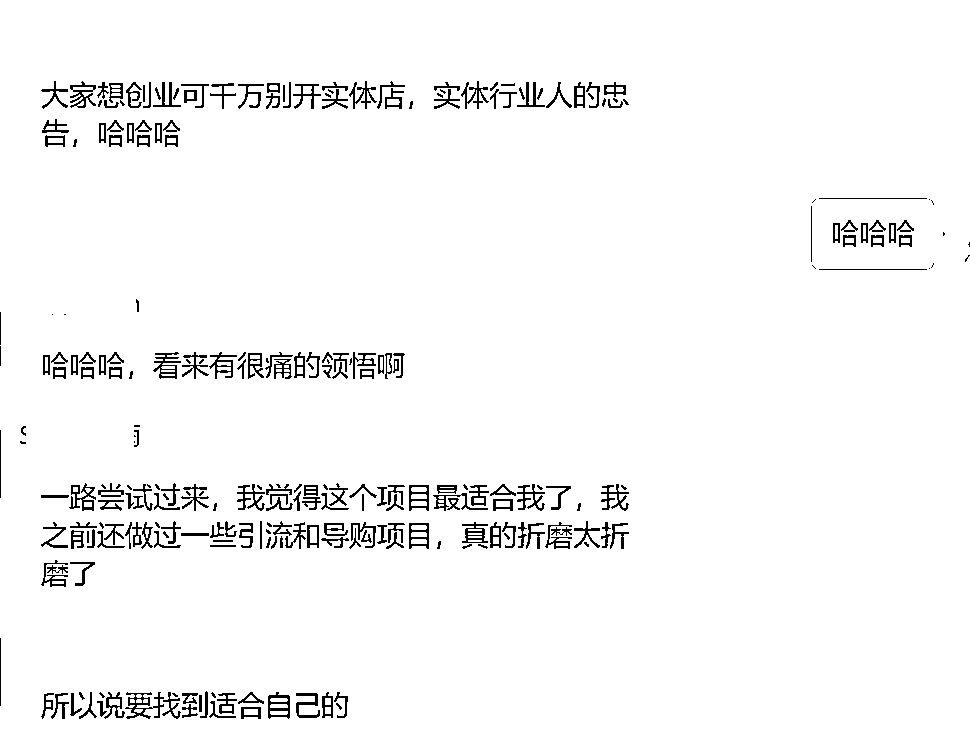
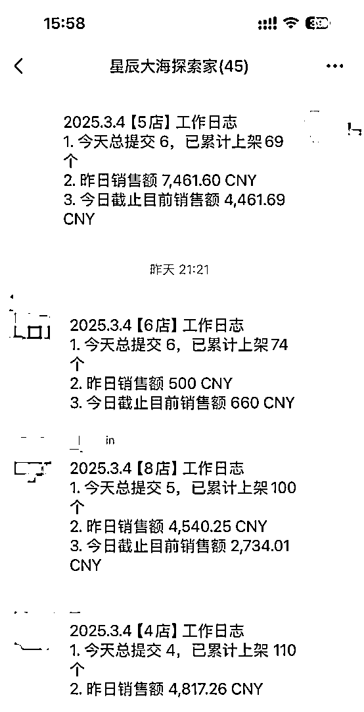

来源：https://u0u31gqf3j8.feishu.cn/docx/FGxodf6S1oggccxkPqYc6LgPnud
大家好！我叫李酸🍋，一个从事自动驾驶行业的程序员，一路从实习生做到公司高管，管理过150+的团队，去年因为公司战略调整我选择了离职，离职后一直想找一个属于自己的事业，可以一想到要工作就开心的事业，对于一个一直上班没有创业过的人来说，这非常有难度。
那个时候，我没有任何创业经验，在网上看各种机会、加入了各个社群，直到我机缘巧合下在生财星球里刷到了小善的贴子并加上了微信。在经过几天的接触后，小善邀请我去海南数字游民社区见面。

于是，我的跨境旅程就开始啦！由于航海报名的条件比较严格（需要相关经验），我完全没做过电商，担心去不了，所以先选了当航海的志愿者保底，边服务大家边学习，开始新的行业，也要从头做起。
在航海期间，我把学员遇到的问题（ ）都看了一遍，并且去找了很多跨境相关的视频和文章学习，同时，我找到了同在深圳的组长@Rain，主动每天去他家楼下的星巴克一起办公（线下交流学习效率UP！ UP！ UP！）。他有电商经验，我跟他学习就能更快入行，就这样，从什么都不懂的小白，到学会选品、上架、找货源、优化链接，共花了1个多月。
1月5日，我就有了自己的店铺，现在成交金额已经有10万+了。


天呐！爆单了
2月9日的早上9点，当我打开店铺后台的时候，我看到成交金额2000+元了！
当时我震惊了，从我开始学到现在也就2个月，之前每天早上醒来，第一件事就是查看后台数据，之前都是180元，200元，（那时候在过年，是希音最差的时候），我们团队依然日拱一卒继续上架，做好每一步，真没想到，居然突然有一天打开后台一天的成交金额是2000了。
我知道这个2000块钱并不是多么大的成绩，可是我是小白，以前从来没做过电商，唯一和电商沾边的就算是我是淘宝拼多多京东得稳定用户吧，这2000块让我看到了不去上班，做自己喜欢工作自由工作的的可能。
回过头来，采购对接群里消息炸了，采购的同事不停催促我找货源，原来的商家链接失效。来了上百单急采订单，新找的供应商产能还没跟上（元宵节过完工人才陆续返工，电商真是一个团队作战的地方，如果是我自己一个人做不知道还要踏多少坑，赔多少钱）
罚款！罚款上万+！！！
2月10日，急采订单还在出，采购的同事急了，如果发不出货将面对2万元+的罚款。
当时我的心情简直要爆炸，好不容易遇到爆款，怎么还赔钱了呢！

库存调0！！！
这时，小虹老师在群里说了，如果还没找到货源，赶紧把库存调0，防止继续出单。于是，我把商品库存设置为0。同时，继续找供应商。
经过组员的努力，终于找到了供应商，我们一次性就下了3000件。
断码断货=断流量！
2月11日，商品的销量、曝光人数都出现断崖式下跌，原来1万+的曝光人数直接跌到1000+，日销从100+单到每日10+单。
我的心情也像这曲线，坐了过山车。
这就是爆单的滋味吗！！！😭😭😭😭

复盘
这次爆单经历让我体验到了整个电商流程，从商品的上架、提报活动、分析数据、处理违规、提早备货、检查库存。
选到一个爆款商品只是基本功，能让爆款链接持续产生销量需要不断地根据商品数据调整运营策略。小虹老师也说前期的罚款，爆款爆了没货，都是给我们必须经历的过程，她培训百变都不如我们完整经历一次损失带给我们的感受，有了这样的痛感，我们以后自然会百倍注意，我已经过了这一关了。
在职场这么些年，发现即使做到了高管的位置也难免沦为工具人。每天做着自己不认可的事情要接受老板的PUA，同时也要PUA下属，这样的生活真的很绝望，长期的压抑搞的整个人状态极差，一个不好的老板真的要人命！我虽然是一个男生，但是在这样的环境心里都逼出了小毛病。
钱和名誉当然很重要，但是在一定基础上，更多钱和每天都期待的工作相比，我欲取后之，只是对于我们这些在大厂常年当螺丝钉的人来说，可能市面见过一些，也管过一些人，但是我们已经早早被规定被在那个狭小的位置，真的让我做一个小小的商业闭环，我还真的暂时没办法。
所以特别感谢生财，我在这里尝试观察了很多方向，最后才有了和小善团队的相遇，有了现在自由又喜欢的工作，
现在做运营只是基础，我希望做一个好的产品为别人带来价值，干了这个我才知道热爱一份工作是啥回事，现在晚上我刷视频都会刷到怎么改品怎么调研用户，马上我们这一波生财培训的同学到了5000单，我们就会开启跨境电商改品之路~ 超级期待！！！
希望到时候创造了我第一个能为用户创造价值的爆品的时候再来分享给大家~
分享一下我组内的同学，才发现大家都不喜欢打工呢！！！原来我不是一个人。
终于找到了一份自己热爱的事业，也认识了一群有趣的小伙伴！大家一起工作，一起分享自己的创业经验，一起成长！




纵有疾风起，日行三公里
最后，感谢生财有术、感谢小善团队、也感谢我的组员陪伴我一路向前！
也希望大家找到一份自己热爱的工作！也欢迎在公司干得不开心被老板压迫的同学找我交流~